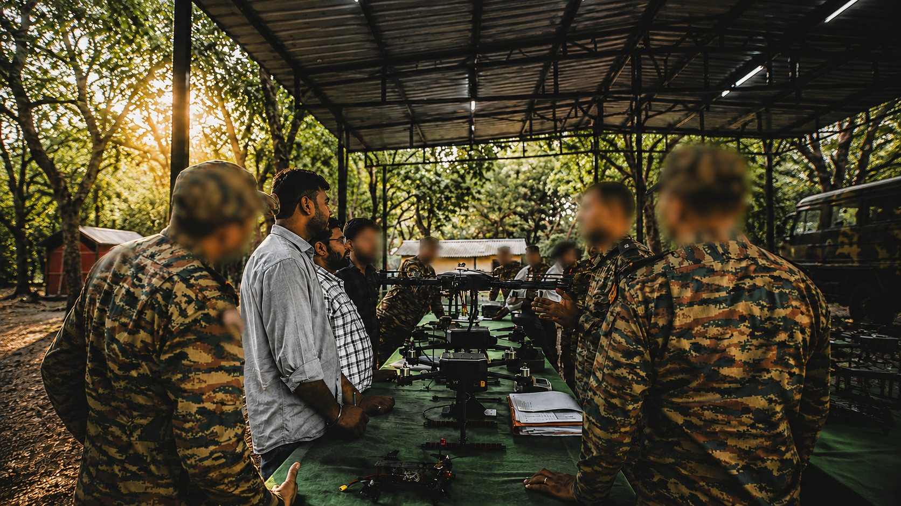

Home / Problems We Solve
Drone problems we solve
Find the problem you are facing, check the signs, and see how to solve it step by step.
Defence and security
GPS jamming and spoofing
Satellite signals are easy to jam, spoof or block, and a drone that depends on them can drift or be lost.
See how to solve it SecurityToo much ground, too few eyes
Borders, pipelines and large sites are too long to cover on foot or from fixed posts alone.
See how to solve it DefenceCorrecting artillery fire safely
Seeing where rounds land usually means putting a person at risk, and passing corrections back takes time.
See how to solve it SecurityBattery limits on overwatch
Every free-flying drone must come down to recharge, which leaves a gap in what you can see.
See how to solve it SecurityMonitoring large crowds
At large events, ground cameras and officers can’t see how the whole crowd is moving.
See how to solve it DefenceOne drone isn’t enough
Some jobs are too large or too risky for one aircraft, and many separate pilots are hard to coordinate.
See how to solve it DefenceWorried about drone data security
Drone video and flight logs can reveal sensitive sites and routines, so where they go matters.
See how to solve it SecurityDrone too bulky to carry
A drone left in the vehicle is no use. Small teams need one they can carry and launch quickly.
See how to solve itIndustry and mapping
Slow land surveys
Ground surveys are slow, hard over rough terrain, and only capture the points someone walked to.
See how to solve it IndustryRisky, slow inspections
Climbing a tower or shutting down an array just to inspect it is slow, costly and dangerous.
See how to solve it AIToo much drone video to watch
Long missions produce more footage than any team has time to review, so important details get missed.
See how to solve it IndustryDrone can’t carry your sensor
LiDAR units and large sensors can be too heavy for a typical drone, or cut its flight time to almost nothing.
See how to solve it IndustryHidden faults in solar plants
A faulty panel can look normal, and checking thousands by hand takes too long.
See how to solve it IndustryLong power lines to inspect
Transmission lines run for kilometres across difficult land, and climbing each tower is slow and risky.
See how to solve itPublic safety and communications
Blind in the first hours of a disaster
After a flood, earthquake or wildfire, roads and networks may be gone and nobody knows the full picture.
See how to solve it CommunicationsNo network in the field
Remote terrain, border areas and disaster zones often have no coverage at all.
See how to solve it Public safetyFinding missing people
Forests, hills and flooded land are slow to search on foot, and time matters.
See how to solve itBuying, training and support
Costly crashes while learning
New operators need hours in the air, but mission-grade aircraft are not the place to make beginner mistakes.
See how to solve it Self-relianceRelying on imported drones
When spares, support and design decisions sit overseas, a grounded drone can stay grounded.
See how to solve it CustomNo standard drone fits your mission
Off-the-shelf drones are built for common needs, so unusual payloads, ranges and conditions can leave you stuck.
See how to solve it ProcurementBuying drones for government
Government buyers must follow procurement rules and also find a drone that meets the actual mission.
See how to solve itHave a problem that isn’t listed?
Tell us what you need the aircraft to do. If a standard platform doesn’t fit, we can design one that does.